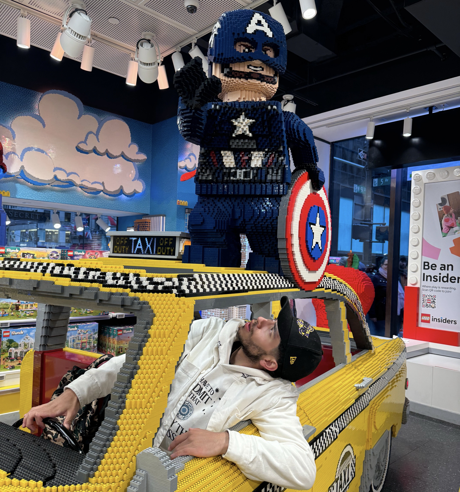

Galería con texto alrededor
Amelie
 Soy Amelie, una persona que le encanta adentrarse en mas alla de lo que la vida nos muestra, me gusta siempre explorar cosas nuevas
me apasiona la lectura, y escribir, poder viajar a lugares en nuestra imaginacion. Me gusta el front, diseñar
y hacer cosas bonitas digitales. Desde pequeña me encantan cosas como Percy Jackson, una de mis sagas favoritas.
Mis bandas favoritas son Lord huron, Radiohead, The lumineers y The smiths.
En mi tiempo libre me gusta escribir o simplemente salir a caminar y explorar lugares que no conozco,sobretodo si tienen naturaleza.
Soy Amelie, una persona que le encanta adentrarse en mas alla de lo que la vida nos muestra, me gusta siempre explorar cosas nuevas
me apasiona la lectura, y escribir, poder viajar a lugares en nuestra imaginacion. Me gusta el front, diseñar
y hacer cosas bonitas digitales. Desde pequeña me encantan cosas como Percy Jackson, una de mis sagas favoritas.
Mis bandas favoritas son Lord huron, Radiohead, The lumineers y The smiths.
En mi tiempo libre me gusta escribir o simplemente salir a caminar y explorar lugares que no conozco,sobretodo si tienen naturaleza.
Santiago
 Soy Santiago, un apasionado de la tecnología y la programación desde los 14 años. Inicié modificando apk's a los 7 años usando software como GameKiller, LuckyPatcher y demás, siempre orientado a la curiosidad. Desde pequeño he sido fan de los LEGO, disfrutando la construcción y el diseño, incluso escalandolos hasta 10:1, algo que también aplico en mi forma de programar: pieza por pieza, todo encaja. Mis videojuegos favoritos incluyen sagas como God of War, Spider-Man, Red Dead Redemption 2 y Cyberpunk 2077. En mi tiempo libre me gusta aprender nuevas tecnologías, experimentar con inteligencia artificial (LLAMA, PyTorch, Tensor), y buscar siempre retos que me permitan crecer profesional y personalmente.